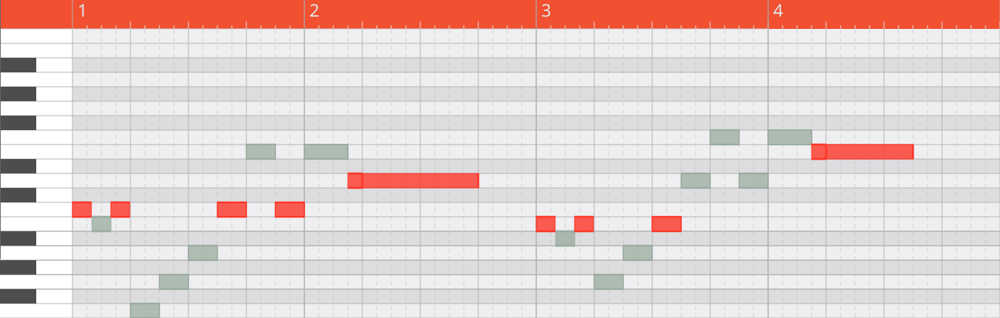

继 Root、3rd 之后，接下来我们要介绍的是5th （五度壳）。关于 5th Shell，没有像 3rd 那样繁多复杂的展开，因此我们可以干脆利落地快速解析。
 1. 5th Shell 的特质
1. 5th Shell 的特质
5th 拥有仅次于根音（Root）的直白与笃定性格。而且或许是因为它处于比根音高出不少的位置，与根音相比，往往带有一种独特的开阔感与高昂感。从本质上说，它具有“无色透明”的特质，个性相对淡薄，因此在实际的旋律创作中，往往比起 5th Shell 本身的特性，该音在调性体系中对应的核音（Kernel，即所在音阶度数）究竟是什么，反而会成为更为决定性的问题。
在 IV 与 VIm 中的频繁应用
因此，5th Shell 大显身手最频繁的和弦便是 IV 与 VIm。在 IV 和弦上使用 Root（Fa），有时情感色彩会显得过于浓重；而在 VIm 和弦上使用 Root（La），听感又显得过于直白且幽暗。此时如果选用 5th Shell，对应的恰好是调内极其平稳好用的 Do 与 Mi。

例如在副歌开头，伴随着 IV 和弦，旋律以 5th Shell 痛痛快快地长音延留，就能在主音（Do）上形成无比舒畅悦耳的共鸣。
尤其是最后平井坚的《轻闭双眼》（瞳をとじて），正是 IV 与 VIm 都选用 5th Shell 的极其典型的代表。当然，即便在其他和弦之上，由于 5th 味道清淡易于融入，当我们在旋律的横向发展中注重动机线条与 Kernel（核音）流转时，5th Shell 自然而然就会在各个角落频频现身。
2. 5th Shell 的实际范例
虽然 5th 很少像 Root 或 3rd 那样被从头到尾持续密集使用，但在流行乐坛中依然能找到不少极具代表性的精彩案例。
Mr. Children – himawari
这首在第 I 章也介绍过的 Mr. Children 的《himawari》（向日葵），在副歌开头的 4-5-3-6 进行中，就非常密集地使用了 5th Shell。


红色高亮标记的部分即为 5th Shell。正如前面所说，开头想要用主音带来强烈的冲击感，因此采用了 IV × 5th；最后伴随着熟悉的“Fa → Mi”解决，顺理成章地落在了 VIm × 5th 之上。果然，从根音向上跨越 5 度的音程距离，自带一种极佳的昂扬张力。由于它不刻意突显大调/小调的明暗色彩，听起来比 3rd 拥有更直接、更有力的直率感。
为了进行对比实验，我们不妨保持相同的动机形态与和弦进行，构建一段以 3rd Shell 为核心的旋律来听听看。
保持动机形态不变，将旋律整体下移 3 度，就会摇身一变成为以 3rd 为核心的旋律。两相对比之下，便会发现 3rd 的色彩感未免显得过于浓稠。尤其是在进行到 V 和弦时，旋律走向了带有强烈倾向性的导音 Ti，听起来难免显得软弱犹豫。考虑到歌曲所塑造的“迎着骄阳笔直伸展盛开的向日葵”这一意象，5th 所蕴含的纯粹力量感在这里显然是更加契合的绝佳选择。
Green Day – American Idiot
请关注 0:31~ 开始的副歌。在 IV — I — V — I 这一极具朋克标志性的简朴和弦进行中，后半部分的 1-5-1 三个和弦全部是从 5th Shell 切入。这种大量融入的 5th，正是促成副歌充满朝气与爽朗快活的重要因素之一。在主歌段落中也能看到 5th 音的连续击打，这与抒情芭乐曲风完全相反，散发出朋克摇滚特有的明快与劲爽。
正如我们所见，5th Shell 扮演着承上启下的折中角色：它既不像 Root 那样质朴单纯，也不似 3rd 那般色彩浓郁，而是呈现出一种不带任何怪癖的中庸平和之声。与其说为了某种特定的刻意目的去使用它，不如说它更多是在关注核音（Kernel）走向与动机横向发展的创作过程中，自然而然邂逅的常客。
总结
- 5th 具有清澈通透、直白有力的特质。它与 Root Shell 相似，但个性略有不同，隐隐带有一种开阔的昂扬感。
- 在 IV 或 VIm 这类根音本身具备倾向性的和弦上，5th 往往对应着极度平稳的内音，因而极受青睐且格外顺手好用。
- 当你不想让旋律流露出过于浓烈的情感羁绊时，选用 5th 往往比 3rd 更为干脆利落、行之有效。